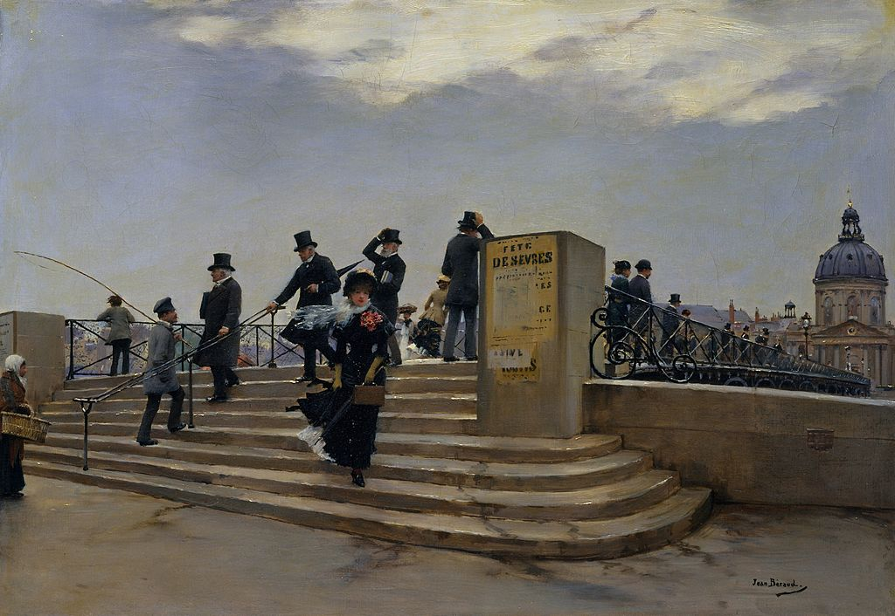

<head>
<meta charset="UTF-8" />
<meta name="keywords" content="drawing, painting" />
<meta name="description" content="drawings by Sunjy" />
<title>Sunjy</title>
<link rel="shortcut icon" type="image/x-icon" href="../../mImages/mCommon/favicon.ico" media="screen" />
<link rel="stylesheet" type="text/css" href="../../mCsses/mCommon/mCssA.css" />
<link rel="stylesheet" type="text/css" href="../../mCsses/mCommon/mCssB.css" />
<link rel="stylesheet" type="text/css" href="../../mCsses/mCommon/mCssC.css" />
<link rel="stylesheet" type="text/css" href="../../mCsses/mCommon/mCssD.css" />
<link rel="stylesheet" type="text/css" href="../../mCsses/mContent/mCssA.css" />
<link rel="stylesheet" type="text/css" href="../../mCsses/mContent/mCssB.css" />
<link rel="stylesheet" type="text/css" href="../../mCsses/mContent/mCssC.css" />
<link rel="stylesheet" type="text/css" href="../../mCsses/mContent/mCssD.css" />
</head>
<script type="text/javascript" src="../../mScripts/mContent/mContentAA.js" /></script>
<script type="text/javascript" src="../../mScripts/mContent/mContentAB.js" /></script>
<script type="text/javascript" src="../../mScripts/mContent/mContentAC.js" /></script>
<script type="text/javascript" src="../../mScripts/mContent/mContentAD.js" /></script>
<script type="text/javascript"></script> 
<script type="text/javascript">
document.write('<div class="mImgAbsolute"></div>');
/*
document.write('<p class="mFontSizeBColor" />From a white paper...</p>');
document.write('<table class="center"><tr><td>');
document.write('');
document.write('</td></tr></table>');
*/
</script>


<script type="text/javascript">
document.write('<p class="mFontSizeBColor" />A Windy Day on the Pont des Arts</p>');
document.write('<p class="mFontSizeSColor" />“A Windy Day on the Pont des Arts” by Jean Béraud depicts the pedestrian bridge spanning the Seine between the Institut de France, visible in the background, and the Cour Carrée of the Louvre.<br><br>Béraud positioned himself on the Quai du Louvre and showed a sample of Parisian society crossing the bridge on a windy grey day.<br><br>Pont des Arts is the name of the footbridge with a unique view of Paris. It has sometimes served as a place for art exhibitions and is today a “studio en Plein air” for painters, artists, and photographers.<br><br>Since late 2008, tourists have taken to attaching padlocks (love locks) with their first names written or engraved on them to the railing or the grate on the side of the bridge, then throwing the key into the Seine river below, as a romantic gesture.<br><br>Since 2012 the number of locks covering the bridge has become overwhelming with over 700,000 locks.<br><br>This fad has created a safety concern for city authorities and an aesthetic issue for Parisians, and the authorities have taken actions to discourage the practice of love locks.<br><br>Art historian Kenneth Clark wrote:<br><br>“I am standing on the Pont des Arts in Paris.<br> On the one side of the Seine is the harmonious, reasonable façade of the Institute of France, built as a college in about 1670.<br> On the other bank is the Louvre, built continuously from the Middle Ages to the nineteenth century: classical architecture at its most splendid and assured.<br> Just visible upstream is the Cathedral of Notre Dame …. the most rigorously intellectual façade in the whole of Gothic art.<br> […] What is civilization? I do not know.<br> I can’t define it in abstract terms –yet.<br> But I think I can recognize it when I see it:<br> and I am looking at it now.”<br></p>');
document.write('<table class="center" /><tr><td>');
document.write('<br>Béraud positioned himself on the Quai du Louvre and showed a sample of Parisian society crossing the bridge on a windy grey day.<br><br>Pont des Arts is the name of the footbridge with a unique view of Paris. It has sometimes served as a place for art exhibitions and is today a “studio en Plein air” for painters, artists, and photographers.<br><br>Since late 2008, tourists have taken to attaching padlocks (love locks) with their first names written or engraved on them to the railing or the grate on the side of the bridge, then throwing the key into the Seine river below, as a romantic gesture.<br><br>Since 2012 the number of locks covering the bridge has become overwhelming with over 700,000 locks.<br><br>This fad has created a safety concern for city authorities and an aesthetic issue for Parisians, and the authorities have taken actions to discourage the practice of love locks.<br><br>Art historian Kenneth Clark wrote:<br><br>“I am standing on the Pont des Arts in Paris.<br> On the one side of the Seine is the harmonious, reasonable façade of the Institute of France, built as a college in about 1670.<br> On the other bank is the Louvre, built continuously from the Middle Ages to the nineteenth century: classical architecture at its most splendid and assured.<br> Just visible upstream is the Cathedral of Notre Dame …. the most rigorously intellectual façade in the whole of Gothic art.<br> […] What is civilization? I do not know.<br> I can’t define it in abstract terms –yet.<br> But I think I can recognize it when I see it:<br> and I am looking at it now.”<br>" />');
document.write('</td></tr></table>');
</script>


